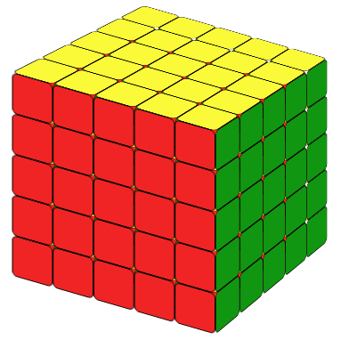
A 5x5 rubik's cube is also called professor's cube. So if you can solve a 5x5 rubik's cube, you are a professor! So it must be very difficult. Actually it's not. A lot of people even thinks it is easier than 4x4. Similar to 4x4, we solve it by reducing it to a 3x3 cube.There are different ways to solve the center blocks.
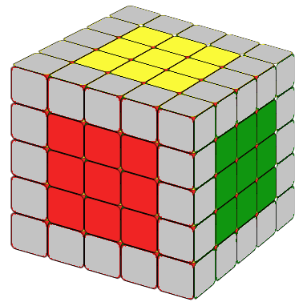
We will introduce here a very simple way, which may not be very face. But it will guaranty that you can solve the centers even you are a very beginner.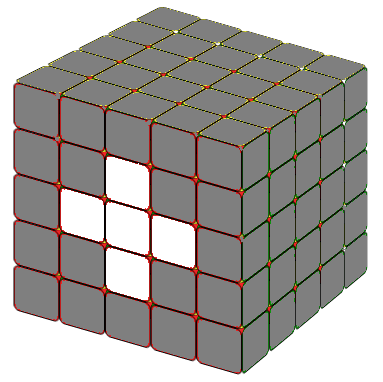
Two very simple formulas when help you to do the job. Let's say than we want to solve the cross of white center block. We first find the white center piece and put it on the front side (face you).
(1)When the needed white piece is on the adjecent side (Fig.2.1), use Formula 1: r U' r'
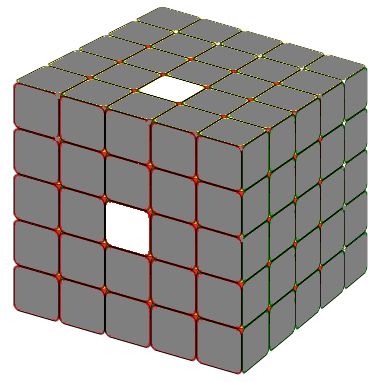
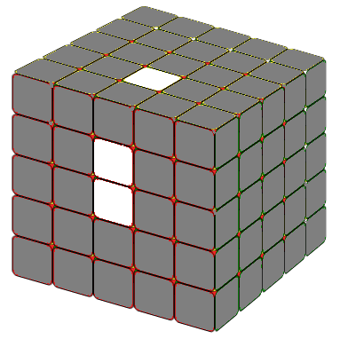
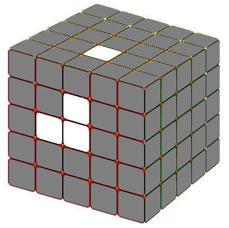
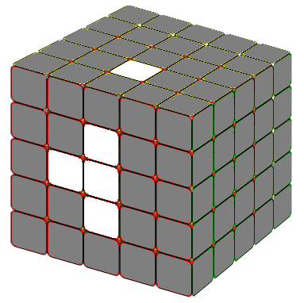
(2)When the needed white piece is on the opposite side (Fig.2.2), use Formula 2: r2 B' r'2
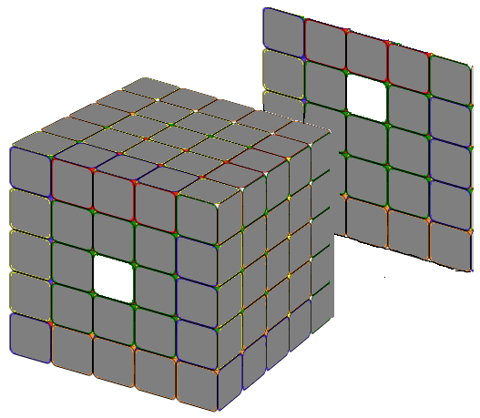
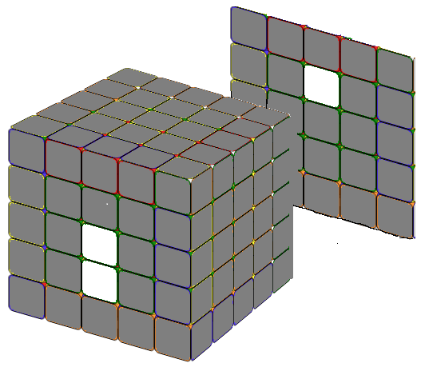
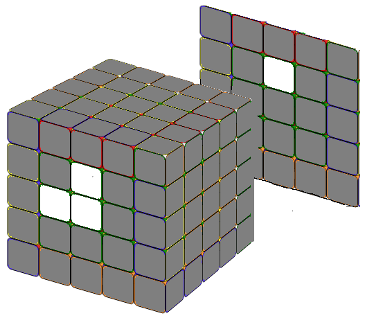
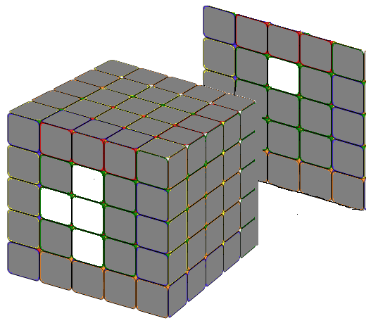
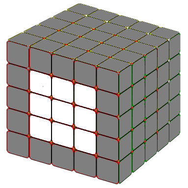
(1)When the needed white piece is on the adjecent side (Fig.2.1), use Formula 3: r U r' U r U2 r'
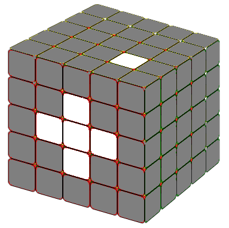
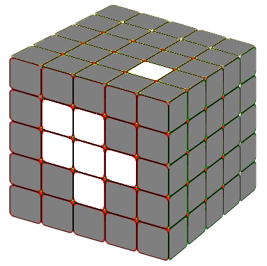
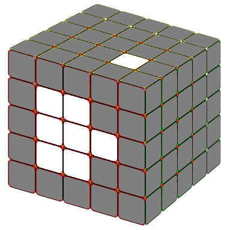
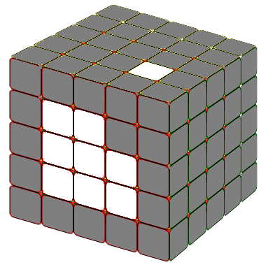
(2)When the needed white piece is on the opposite side (Fig.2.2), use Formula 4: r2 B r'2 B r2 B2 r'2
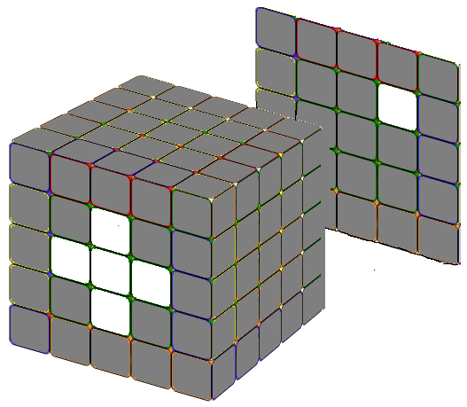
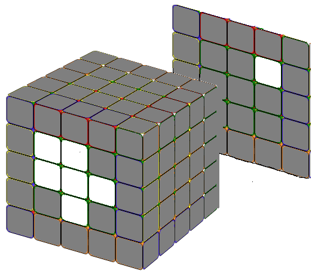
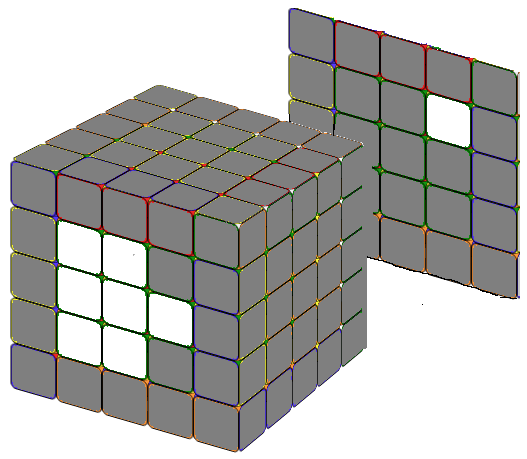
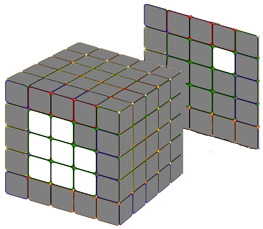
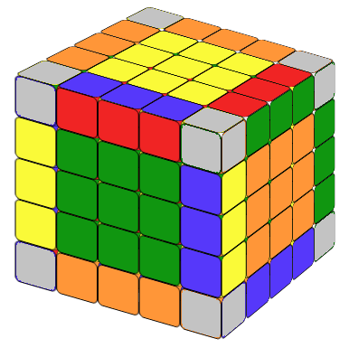
Combining edges is time consuming but it's very intuitive. If you have solved 4x4 before, this will be very simple, they are almost the same. For example, we want to solve the white edge block first. First, we will find the center white edge piece and put it on the front side (face us). Then we turn the sides so that the other one or two white edge pieces are on the same side of the center white edge piece. There are two different situations.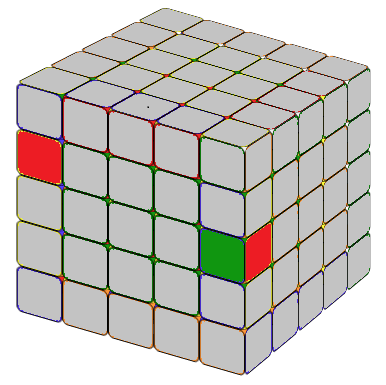
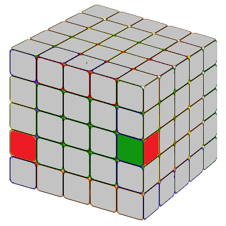
These cases are just like the cases in 4x4 step2, situation A, and we could use the similar methods used in 4x4 cubes.
In this case, we want to group, for example, the green-red edge block. (The red color on the left side are not showing on the images.) In the following two situations, we want to move the cubie on the left side to the right side and on top of the center edge piece(marked in color black). We could achieve this by u L' F U' L F' u'
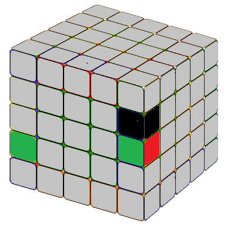
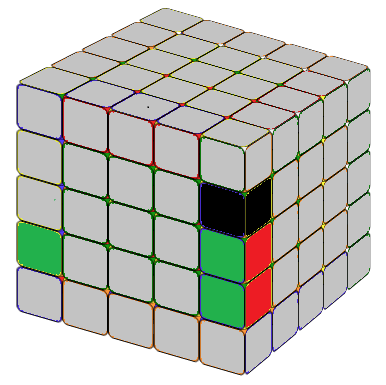
In this case, we want to move the cubie on the left side to the right side and below the center edge piece (marked in color black). We could achieve this by d' L' F U' L F' d
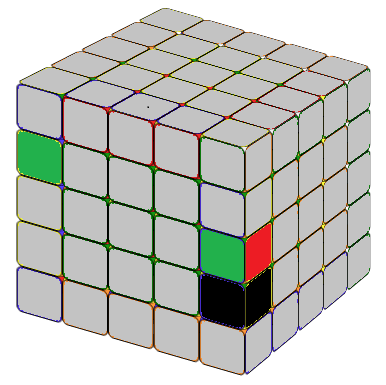
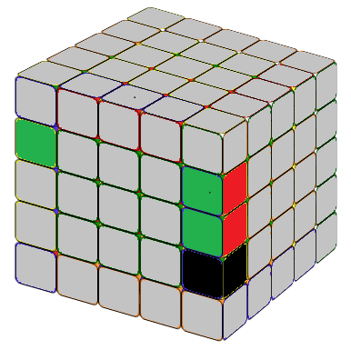
Using these formulas we could the edges block by block. If you are luck, you could solve all 12 edge blocks. But some times, you may encounter a situation where the last edge cannot be solved by the above method. It has to deal with on its own. Maneuve the cube with the above formula, we can alway make the last unsolved edge block looks like the image below which could be solved using the following formula
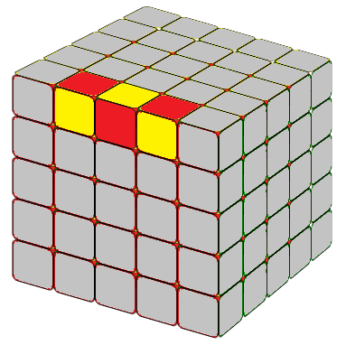
(r2B2U2) (lU2) (r'U2) (rU2) (F2rF2) (l'B2) r2Now we have the 5x5 cube with solved centers (3x3 blocks) and edges (1x3 blocks). We can solve it just like a 3x3 cube. Unlike a 4x4 cube, there are no special situations. It's done!
Have fun!